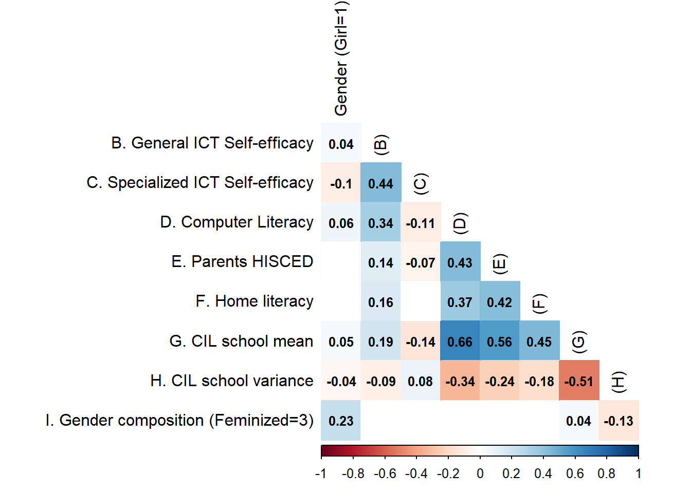

| Label | Stats / Values | Freqs (% of Valid) | Valid |
|---|---|---|---|
| Edit graphic images (Suggested as General ICT Self-efficacy) | 1. I know how to do this. 2. I have never done this bu 3. I do not think I could do |
2273 (76.0%) 571 (19.1%) 146 ( 4.9%) |
2990 (96.7%) |
| Write or edit text (Suggested as General ICT Self-efficacy) | 1. I know how to do this. 2. I have never done this bu 3. I do not think I could do |
2592 (87.5%) 295 (10.0%) 74 ( 2.5%) |
2961 (95.8%) |
| Search and find information on internet (Suggested as General ICT Self-efficacy) | 1. I know how to do this. 2. I have never done this bu 3. I do not think I could do |
2584 (87.4%) 291 ( 9.8%) 81 ( 2.7%) |
2956 (95.6%) |
| Create multi-media presentation (Suggested as General ICT Self-efficacy) | 1. I know how to do this. 2. I have never done this bu 3. I do not think I could do |
1983 (67.2%) 772 (26.2%) 195 ( 6.6%) |
2950 (95.4%) |
| Upload multimedia to an online profile (Suggested as General ICT Self-efficacy) | 1. I know how to do this. 2. I have never done this bu 3. I do not think I could do |
2377 (80.9%) 419 (14.3%) 141 ( 4.8%) |
2937 (95.0%) |
| Insert an image into a document/message (Suggested as General ICT Self-efficacy) | 1. I know how to do this. 2. I have never done this bu 3. I do not think I could do |
2441 (84.1%) 345 (11.9%) 115 ( 4.0%) |
2901 (93.8%) |
| Install a program/app (Suggested as General ICT Self-efficacy) | 1. I know how to do this. 2. I have never done this bu 3. I do not think I could do |
2440 (84.2%) 332 (11.5%) 127 ( 4.4%) |
2899 (93.8%) |
| Judge internet information veracity (Suggested as General ICT Self-efficacy) | 1. I know how to do this. 2. I have never done this bu 3. I do not think I could do |
2043 (71.2%) 679 (23.7%) 146 ( 5.1%) |
2868 (92.8%) |
| Create a database (Suggested as Specialized ICT Self-efficacy) | 1. I know how to do this. 2. I have never done this bu 3. I do not think I could do |
1040 (35.0%) 1475 (49.6%) 457 (15.4%) |
2972 (96.1%) |
| Build a webpage (Suggested as Specialized ICT Self-efficacy) | 1. I know how to do this. 2. I have never done this bu 3. I do not think I could do |
838 (28.3%) 1514 (51.2%) 607 (20.5%) |
2959 (95.7%) |
| Create a computer program/app (Suggested as Specialized ICT Self-efficacy) | 1. I know how to do this. 2. I have never done this bu 3. I do not think I could do |
469 (15.8%) 1527 (51.6%) 964 (32.6%) |
2960 (95.7%) |
| Set up a local area network (Suggested as Specialized ICT Self-efficacy) | 1. I know how to do this. 2. I have never done this bu 3. I do not think I could do |
906 (30.8%) 1263 (43.0%) 769 (26.2%) |
2938 (95.0%) |
This document was last modified at and it was last rendered at .
Gender differences in digital self-efficacy at school
Juan Carlos Castillo1, Daniel Miranda2, Teresa Correa3, Nicolás Tobar4 and Ingrid Bachmann5
Abstract
A series of studies reveal that, in the majority of secondary school systems, male students consistently demonstrate higher technological self-efficacy than their female counterparts. Paradoxically, female students achieve significantly higher scores in international standardized tests of computer literacy, raising up the question: Do girls underestimate their digital abilities? This study focuses on gender differences in digital self-efficacy in three main aspects: a) a contrast between general and specialized self-efficacy, b) control gender differences in self-efficacy by performance in a digital abilities test, and c) gender composition effects, this is, whether the proportion of females in the classroom affects girls (and boys) self-efficacy. We estimate a series of multilevel models (random effects) using data from the Chilean ICILS (International Computer and Information Literacy Study) 2018 database, comprising 178 schools and 3092 students. Our results suggest that women exhibit lower self-efficacy for the use of advanced technological applications, even under control of performance in a digital literacy standardized test. However, and contrary to our initial hypothesis, female students show less confidence when surrounded by a larger proportion of girls in the classroom.
1 Introduction
With the proliferation of digital technologies, educational systems worldwide have undergone a deep transformation, where knowledge and abilities in the realm of information and computer technology (ICT) emerge as crucial for navigating modern society. ICT encompass a range of competencies, including —but not limited to— computer literacy, coding skills, internet navigation, and critical thinking in digital environments. In such a context, proficiency in ICT is increasingly recognized as a fundamental component of education success and future career opportunities (Hooley & Staunton, 2020; Mahmud & Wong, 2022). Despite the widespread integration of technology in classroom instruction, significant disparities persist in the acquisition and mastery of ICT competences among school-age children, contributing unequal access and outcomes that hinder the ability of marginalized groups to fully participate and succeed in an increasingly digital society (Dodel, 2021).
A primary factor that generates gaps in ICT competences is socioeconomic status, whereby children from lower-income families often face barriers such as limited access to reliable internet connectivity, outdated technology infrastructure in schools, and insufficient resources for digital learning tools (Butcher & Curry, 2022; Mulyaningsih et al., 2021). Additionally, disparities in parental education and involvement further exacerbate these challenges, as children from families with higher levels of parental education tend to have greater exposure to technology and receive more support for developing ICT knowledge and skills (O’Hara, 2011). Furthermore, cultural stereotypes and gender norms can also influence the types of skills encouraged and valued among boys and girls, leading to differential opportunities for learning and advancement in certain domains (Clayton et al., 2009; Wong & Kemp, 2018). For instance, girls are less likely to pursue computer science and engineering degrees due to stereotypes that these fields are male-oriented (Cheryan et al., 2015). Such stereotypes emerge very early and are reinforced in socialization environments such as the school (Varoy et al., 2023).
Besides status and gender differences in the acquisition of ICT knowledge and skills, self-efficacy has proven to be a key aspect in the exercise of digital competences. Self-efficacy is generally defined as a person’s confidence in their capacity to handle challenges and achieve desired outcomes (Bandura, 1982), essential for an adequate exercise of digital skills. Research suggests that societal stereotypes and cultural norms often shape individuals’ perceptions of their digital self-efficacy and interests in technology domains, which can vary based on gender (Hargittai & Shafer, 2006). Girls, for instance, may internalize messages that associate technology and computer science with masculine traits, leading to lower confidence in their abilities and less motivation to pursue digital learning opportunities (Papastergiou, 2008). Conversely, boys may receive implicit or explicit encouragement to engage with technology, resulting in higher levels of self-efficacy and persistence in acquiring digital skills. Furthermore, socialization within peer groups and family environments can reinforce these gendered attitudes, creating a self-perpetuating cycle of differential participation and achievement in digital domains that could have an impact in perceptions of self-efficacy.
Chile presents particularly interesting conditions for studying gender inequalities in digital self-efficacy around educational contexts. In this country, although female enrolment in higher education exceeds male enrolment by 6.9%, in the case of degrees associated with computer technologies, male enrolment exceeds female by 65.7% (Guzmán, 2021; SIES, 2021). In addition, there is evidence of high levels of dropout among women entering computer careers, which are mainly explained by psychological factors such as low self-esteem, academic inefficiency and lack of encouragement during their secondary education (de la Fuente-Mella et al., 2020; González Catalán et al., 2018). This last finding is in line with research showing a persistent gender gap in performance on standardized mathematics national school tests (Vargas Diaz & Matus Correa, 2022). In this sense, and in line with the findings of the educational literature in the Latin American region, it is important to approach the school stage in order to understand the formation of gender inequalities in self-efficacy and digital literacy around higher education and occupational structure (Ancheta-Arrabal et al., 2021).
The present paper deals with Chile’s gender differences regarding digital literacy at school age, with a focus on ICT self-efficacy in three main aspects. First, we make a distinction between general and specific digital self-efficacy in order to explore whether sex differences manifest equally in both domains. Secondly we address the link between ICT knowledge and self-efficacy by gender. The interest in this aspect is based on the fact that girls tend to outperform their male counterparts when it comes to standardized test in technological abilities and literacy (Fraillon et al., 2014; Gebhardt et al., 2019; Punter et al., 2017; Tømte & Hatlevik, 2011; Tsai & Tsai, 2010). Therefore, this would express a paradox for girls: subestimation in self-efficacy despite better performance. Thirdly, we focus on class gender composition and its interaction with gender and self-efficacy. Based on research on gender compositional effects in classrooms, we argue that the interaction in contexts with peers with higher self-efficacy (males) could lead to a reinforcement of gender stereotypes and to a decrease in ITC self-efficacy in females. Therefore, a larger proportion of females in a classroom would be related to larger self-efficacy for them.
2 Self-efficacy and ICT (Information and Computer Technology)
One key psychological construct related to ICT is self-efficacy. Developed by Bandura (1982), self-efficacy refers to “beliefs in one’s capabilities to organize and execute the courses of action required to produce given attainments” (p. 3). In other words, it is a form of self-assessment or perception of one’s own abilities, shaping individuals’ decisions and choices. Those who believe that they are capable of performing well in an activity are more likely to put in effort, as well as persist and persevere when they experience obstacles (Bandura, 1982). As a component of social cognitive theory, self-efficacy distinguishes between people’s motivation to perform a task based on the expected outcome (outcome expectancy) and their perceived capability to perform a task (self-efficacy). As Bandura (1977) put it: “Individuals can believe that a particular course of action will produce certain outcomes, but if they entertain serious doubts about whether they can perform the necessary activities such information does not influence their behavior” (p.193). As such, it is usually positioned early in the chain of predictors that determines performance and behaviors and has become a very relevant factor to determine learning processes and performances in different areas such as education (Wray et al., 2022) and health (Mata et al., 2021).
According to the theory and evidence (Bandura, 1997; Usher & Pajares, 2008), there are four sources of self-efficacy, which can be grouped into individual factors (mastery experience and emotional states) and social comparative factors (vicarious experiences and social model) considered sources of self-efficacy. Mastery experience refers to people’s previous interpretations and evaluations of their successes and failures completing similar or related tasks. Experienced mastery (or previous skills) has a strong effect on people’s self-efficacy. Also, negative emotional states such as anxiety and stress undermine self-efficacy.
Self-efficacy has proven to be particularly relevant when it comes to digital technologies. Several concepts have been used to describe people’s abilities and performance in this realm, such as digital skills (Correa, 2016; van Dijk & Deursen, 2014), digital competence (Zhao et al., 2021), information and communication technologies (ICT) literacy, or digital literacy (Reddy et al., 2020), among others. Much of these concepts has been used in an applied science approach, which has focused on technical abilities regarding hardwares and softwares. However, more recent frameworks have emphasized the need to focus on digital abilities that involve critical thinking as well as social and creative skills (REF Helpser, 2023; REF Correa, Valenzuela, & Pavez, 2023). For instance, van Dijk & Deursen (2014) as well as REF Helsper and colleagues (2020) have distinguished among different dimensions: technical and operational skills; information navigation and processing skills; communication and interaction skills; and content creation and production skills.
A more specific definition of ICT competences for the school-age has been developed by Fraillon et al. (2014) in the framework of the International Computer and Information Literacy Study (hereafter ICILS). ICILS is an international comparative study conducted by the IEA (International Association for the Evaluation of Educational Achievement) since 2013, with further waves in 2018 and 2023 (still not released). ICILS has used the term “computer and information literacy” (CIL) to describe people’s “ability to investigate, create, and communicate in order to participate effectively at home, at school, in the workplace, and in society to use computers to investigate (Fraillon et al., 2014). Following a multidimensional approach, the CIL assessment focuses on computers and encompasses four strands of skills: understanding computer use, gathering information, producing information, and digital communication. The 2018 study followed the same conceptualization and included computer thinking (Fraillon et al., 2020). Although the vast majority of studies have focused on self-reported levels of skills (Livingstone et al., 2023), the ICILS study measured students’ performance by completing a range of tasks.
Combining the previous definitions of self-efficacy and digital literacy, it is possible to define digital self-efficacy as the individuals’ belief in their ability to perform specific actions on computer or information technologies to achieve a particular goal (Eastin & LaRose, 2000). Although there are several terms and ways of measuring this construct (Cassidy & Eachus, 2002), the evidence has consistently shown that digital self-efficacy is a strong predictor of various digital competencies, including frequency of internet usage among adolescents, especially among male teens (Broos & Roe, 2006), and number of online activities performed (Livingstone & Helsper, 2007).
Research has also distinguished between general and specific self-efficacy. While the former refers to more general beliefs or feelings in one’s abilities toward basic tasks, the former is related to more specific tasks (Agarwal et al., 2000). General self-efficacy is not necessarily tied to specific situations, could be built on previous experiences and conceived as a more general dispositions (Schwoerer et al., 2005).
Another relevant aspect to consider for developing ICT self-efficacy is the level of knowledge about these technologies, which can be placed as mastery experience. Previous evidence shows that getting training (Downey & Kher, 2015), receiving standard classes in a computer science course (ADD REF), and having more experience using ICTs (Hatlevik et al., 2018) can increase self-efficacy levels. Along the same lines, evidence in the school population shows that computer literacy —which mainly focuses on evaluating basic tasks— is positively associated with ICT self-efficacy. Here too, it is possible to distinguish between self-efficacy for either basic or advanced tasks. Specifically, higher computer literacy increases basic ICT self-efficacy but not advanced ICT self-efficacy (Fraillon et al., 2020). An important aspect to consider is that computer literacy also shows gender gaps. Cross-national results from international studies show that girls tend to achieve higher proficiency levels than boys in computer literacy (Fraillon et al., 2014).
3 Gender and Self-efficacy
Gender differences in ICT self-efficacy is a widely studied topic. Empirical evidence consistently shows girls tend to feel less confident than boys in their ability to use ICTs (Broos, 2005; Gebhardt et al., 2019; Hargittai & Shafer, 2006). Similarly, gender differences have been observed in multiple aspects of the digital sphere, such as women’s participation gaps in the technology sector, attitudinal gaps toward ICTs access, interest and enjoyment of technologies, computer use intention for study and labor, among others (Hargittai & Shaw, 2015; López-Martínez et al., 2021; Schradie, 2015). Most theories attempting to explain such gender differences in confidence and skills are related to conceptualizations of prejudices and stereotypes about gender, which at the same time can affect individual perceptions of self-efficacy.
Stereotypes are beliefs about the characteristic properties of people classified into particular social categories or groups. Because they are shared and acquired within societies, they can shape social life and affect the way we treat individuals, who are expected to have certain traits, role behaviors, occupations, and physical characteristics based on attributes such as gender, ethnicity, or age (A. H. Eagly et al., 2020; A. Eagly & Koenig, 2021; Haines et al., 2016). Gender stereotypes are generalizations about the attributes of men and women, and have both descriptive and prescriptive properties, designating both what women and men are like, and should be like (A. H. Eagly & Karau, 2002; Heilman, 2001, 2012). Among these ideas are that men are rational, assertive, active, unfeeling and perform well in physical work, whereas women are emotional, indecisive, passive, warm, physically weak but nurturing (A. H. Eagly & Karau, 2002; Ellemers, 2018). These traits translate into work domains and expected roles and, for instance, women are more often associated with arts and family, and men with science and physical labor (Haines et al., 2016; Heilman, 2012; Tellhed et al., 2023).
While gender stereotypes are not static, they have shown to inform expectations about men and women’s interests and talents, and even people’s career aspirations (Ellemers, 2018; Haines et al., 2016). This includes expectancies of success —that is, self-efficacy. In general, girls and women show low levels of self-efficacy in stereotypically male activities and men-dominated domains, including technology and computer sciences spaces, even when their actual performance is not necessarily worse (Beyer, 2014; Broos, 2005; Gebhardt et al., 2019).
Various theories have attempted to understand the gender gap, considering self-efficacy consistent with the gender stereotypes framework. For instance, the Expectancy-Value Theory (EVT) “postulates that achievement-related choices are motivated by a combination of people’s expectations for success and subjective task value in particular domains” (Leaper, 2011). In it, expectation of doing well (combined with the value of the activity) could make it more likely to be involved in activities. Similarly, the Stereotype Threat Theory (STT) poses the expectation of performance in the center. It proposes that when there is a stereotype about the poor performance of a minority group in a relevant task, members of that group tend to confirm the stereotype, particularly in more complex tasks (Koch et al., 2008). In this case, women tend to be perceived as worse performers in computer use (Smith et al., 2005), which would be consistent with the results observed in interest or ICT self-efficacy. Aligned with social modelling sources of self-efficacy, the Social Role Theory (SRT) argues that gender stereotypes derived from the roles that men and women occupy in society can affect achievement expectations, ability beliefs, or interests (Tellhed et al., 2023). From the SRT, the fact that ICTs are associated with more masculine traits affects interest and expectations in studying and participating in ICT-related occupations (Sáinz et al., 2016; calabuigEffectsIntensiveUse2018?). Girls tend to perceive work in ICTs as antisocial, very technical, detached from social needs, lacking social skills and individualistic (Sáinz et al., 2012; Thomas & Allen, 2006), which would diverge from stereotypes associated with women. Along these lines, it is argued that girls have less exposure to female roles that could model their participation in ICTs. Specifically, it has been observed that there are fewer examples of women in the ICT field among families and teachers and that they also tend to have a stereotyped opinion of them (Cussó-Calabuig et al., 2018).
As the STT suggests (Koch et al., 2008; Master & Meltzoff, 2020), confirmation tends to occur with more difficult tasks. By distinguishing between basic ICTs versus more complex tasks requiring more training, boys tend to show even greater self-efficacy than girls in advanced tasks (Busch, 1995). For Cassidy & Eachus (2002), a possible explanation is that more complex tasks tend to be perceived as more masculine, which would partly explain the observed result. In contrast, Hatlevik et al. (2018) report that girls show higher levels of self-efficacy in ten out of fourteen analyzed countries, concluding that the image of boys being more self-confident than girls could be decreasing in some countries. However, it is relevant to mention that the analyzed self-efficacy scale refers to basic tasks, such as editing text or finding internet information (Fraillon et al., 2020).
In sum, evidence points to higher self-efficacy of boys compared to girls, but also higher achievement by girls, which posits the question of how these two factors interact. Evidence suggests that boys tend to overestimate their own ICT literacy, while girls tend to underestimate it (Punter et al., 2017). Consequently, the expected interaction is that higher computer literacy would increase gender gaps in ICT self-efficacy. In that case, high levels of achievement could increase the boys’ confidence in their ICT abilities, and conversely, low levels of achievement could decrease girls’ confidence in ICT abilities.
Arguably, gender socialization and stereotypes influence the types of activities boys and girls practice, their interests, and the achievements they may accomplish, which reflects and perpetuates gender roles and gender gaps. Therefore, we posit the following hypotheses:
- H1: Female students will show lower digital self-efficacy than male students.
- H2: As computer literacy increases, digital self-efficacy will increase.
- H3: When computer literacy increases, female students will have a lower increase of digital self-efficacy than males.
4 School level. Composition effect theories (Gender and performance of classmates)
People’s social comparisons also affect their perceived self-efficacy. Based on social approaches to learning and performance, scholars have proposed that people can build or undermine their self-efficacy by vicarious experiences of observing others’ performances and proficiency. This occurs particularly in comparison to those who are perceived as having similar attributes, such as gender and age (Ahn et al., 2020; Schunk, 1987). For instance, if individuals observe that their classmates did poorer than them, their self-efficacy will likely improve and vice versa. These social comparative factors in children’s performances are more influential in middle school, when young people are more aware of social comparative information (Eccles et al., 1984).
When considering classroom composition, it is crucial to understand that it encompasses various factors that can significantly influence the learning environment and student outcomes —such as digital self-efficacy. Classroom composition refers to a classroom’s demographic, social, and academic makeup, including student attributes aggregated at the class level (Hochweber et al., 2014). Research has shown that classroom composition can impact peer interactions, instructional behavior, and student achievement (Klusmann et al., 2016). Additionally, classroom composition has been linked to developing antisocial behavior, motivation, language development, and executive function skills among students (Barnes et al., 2023; Guo et al., 2014; Rjosk et al., 2015). In this sense, changes in classroom composition, such as mixing students, can affect stability, peer interactions, and peer victimization within the classroom (Graham, 2006; Rambaran et al., 2020). Furthermore, the distribution of student abilities within a classroom, known as heterogeneous grouping, has been associated with positive effects on academic achievement and social interactions (Rjosk et al., 2015).
The classroom composition, particularly in terms of gender balance, can significantly influence the acquisition and development of several skills among school-age children. For instance, Schneeweis & Zweimüller (2012) reported that a higher share of girls in schools led to less likelihood of choosing female-dominated school types, whereas Alan et al. (2018) discovered that girls taught by teachers with traditional gender views had lower performance in math and verbal tests. In contrast, Tillmann & Comim (2023) identified a positive relationship between scholastic achievement and the proportion of female students, suggesting that more girls in the classroom can lead to improved student behavior and academic potential.
There are few studies that specifically assess the effects of gender composition on technological self-efficacy around educational contexts. At university level, Busch (1996) found that groups composed mostly of women tend to have more cooperative members than groups composed mostly of men to perform computational tasks related to management careers. However, women majority groups also have lower levels of computational self-efficacy, less previous experience with computers, and less previous encouragement to work with computers. At the secondary education level, through a multilevel exploration, Meelissen & Drent (2008) argue that gender disparities (in favor of boys) in the development of positive attitudes towards technologies are buffered to the extent that there is less presence of students promoting gender stereotypes and more female teachers teaching at school. In line with these findings, it would seem that as the level of female students increases, the students’ self-efficacy levels in the school as a whole tend to decrease. However, if it is assumed that male students are the ones who mostly diffuse gender stereotypes with technologies, it could be hypothesized that as the number of female peers in the classroom increases, female students would feel more confident with their knowledge and skills with technologies.
Taking the previous arguments and evidence into account, the corresponding hypotheses are: - H4: A larger proportion of girls in the classroom increases girls’ self-efficacy. - H5: Given gender stereotypes, girls will show lower self-efficacy than boys in classrooms with a higher average of computer literacy level.

5 Data, variables and methods
5.1 Data and sample
The database used is the International Computer and Information Literacy Study (ICILS), conducted by the International Association for the Evaluation of Educational Achievement (IEA) in 2018. The study sampled eighth-grade students using a random multistage stratified cluster design to ensure representativeness at the school and student/teacher levels across all participating countries. Schools serve as the primary sampling units, while teachers and students are the secondary sampling units. The analysis focuses exclusively on the Chilean subset of the ICILS 2018. The sample comprised 3,092 students (1519 boys and 1573 girls) distributed across 178 schools. Both levels are representative of the broader Chilean student and school population.
ICILS employed various instruments to collect data. Participants first took a Computer Literacy test with multiple-choice items, assigning each student a Computer and Information Literacy (CIL) score based on their responses. Next, students completed a questionnaire about their home background, values, beliefs, attitudes, and behaviors related to Computer and Information technologies. Additionally, teachers completed a questionnaire assessing their values, beliefs, attitudes, and behaviors related to Computer and Information technologies and their teaching roles. Principals and ICT managers provided information on the school’s social characteristics and ICT infrastructure through surveys.
5.2 Variables
Student level
General and Specialized ICT Self-efficacy: The ICILS student data encompasses two indices of digital self-efficacy: one for general or basic applications and the other for advanced or specialized tasks. Both indices were constructed using a same battery with the question How well can you do this tasks when using ICT?.The items can be examined in Table 1.
The construction of both self-efficacy indices suggested by IEA were validated at international level, with a comparative approach between countries. To establish the measurement validity of these indexes we performed a confirmatory factor analysis with supporting results for the bi-dimensional structure of self-efficacy (generalized and specific)(see Table 9 in the appendix). Based on this results, we decided to continue working with the two indices provided by the IEA. Both indexes were constructed by the IEA using the Weighted Likelihood Estimation Method, where scores have a mean of 50 and a standard deviation of 10, based on equal weights for all countries. A higher index value indicates a higher level of self-efficacy.
Computer and Information Literacy: The CIL scale used in the analyses is based on a test applied by IEA. The test consists of a computer application with a set of five modules, in which each student has to respond to two randomly selected. Every module has 30 minutes of assessment. The structure of a module consisted of a set of questions and tasks based on a realistic theme and following a linear narrative structure. These modules have a series of small discrete tasks (typically taking less than a minute to complete) followed by a large task that typically took 15 to 20 minutes to complete. In total, the modules comprised 81 discrete questions that generated 102 score points. So, in total, an individual could reach a maximum score of 204 points.
The five modules measured different Computer Abilities. The first one was oriented in website construction, while the second one in digital files managing and collection. The thirst challenged students to plan a school trip through database building and mapping tools. Another module included a school-based social network where students were encouraged to post and message their peers to join a board games interest group. The last module requested research information about recycling on the internet, and then designed infographics about carbon footprint awareness.
The ICILS CIL reporting scale was established in ICILS 2013, with a mean of 500 (the average CIL scale score across countries in 2013) and a standard deviation of 100 for the equally weighted national samples that met IEA sample participation standards in the first cycle (2013). The ICILS database offers five possible values of the CIL score that were generated with full conditioning to derive summary student achievement statistics. Conventionally, papers based on this study usually occupy the first plausible value, which is coded “pv1cil”. This research is no exception. Due to the large magnitude of the figures for this variable, the scale had to be multiplied by 0.1 to make the results more intelligible. The higher the value of the scale, the higher the CIL of the student.
Control variables: The analysis includes control variables that tend to be influential in studies of educational and technological inequalities. These variables encompass family socioeconomic status - by the highest level of parental education (ISCED Scale) - and the number of books in the household.
Table 2 displays key statistics of independent student-level vairables to explore.
| Label | Stats / Values | Freqs (% of Valid) | Valid |
|---|---|---|---|
| Sex of student | 1. Boy 2. Girl |
1519 (49.1%) 1573 (50.9%) |
3092 (100.0%) |
| Computer and Information Literacy Score | Mean (sd) : 48 (8.8) min < med < max: 14 < 49 < 76 IQR (CV) : 12 (0.2) |
3092 distinct values | 3092 (100.0%) |
| Highest ISCED of parents | 1. He/She did not complete I 2. ISCED level 2 3. ISCED level 3 4. ISCED level 4 or 5 5. ISCED level 6, 7 or 8 6. Not administered or missi 7. Presented but not answere |
53 ( 1.7%) 266 ( 8.7%) 1064 (34.8%) 626 (20.5%) 1048 (34.3%) 0 ( 0.0%) 0 ( 0.0%) |
3057 (98.9%) |
| Home literacy index | 1. None or very few (0–10 bo 2. Enough to fill one shelf 3. Enough to fill one bookca 4. Enough to fill two bookca 5. Enough to fill three or m 6. Not administered or missi 7. Presented but not answere |
774 (25.2%) 942 (30.7%) 758 (24.7%) 315 (10.3%) 279 ( 9.1%) 0 ( 0.0%) 0 ( 0.0%) |
3068 (99.2%) |
School level
The study took into account two contextual variables to develop multilevel analyses. The first is the average score on the Computer and Information Literacy test at school, which was estimated by aggregating students’ scores by mean. The second is the gender composition of the school, which is estimated by dividing the total number of female students by the total number of eighth grade students in the school. According to the resulting ratio of female students, schools were classified into three categories. Table 3 details frequencies and descriptive statistics of these variables.
| Label | Stats / Values | Freqs (% of Valid) | Valid |
|---|---|---|---|
| School mean score CIL test | Mean (sd) : 48 (6.2) min < med < max: 21 < 48 < 61 IQR (CV) : 9.7 (0.1) |
178 distinct values | 178 (100.0%) |
| School gender composition | 1. Masculinized school (0-33 2. Mixed school (34%-66% gir 3. Feminized school (67%-100 |
10 ( 6.1%) 134 (82.2%) 19 (11.7%) |
163 (91.6%) |
5.3 Methods
The analysis consists of two stages. The first one explores differences in self-efficacy by gender as well as their correlations with the key variables of the study. The second stage shows the estimation of a series of multilevel (random-effects) models (Hox et al., 2017; Vijver et al., 2008).
The hypotheses of this research were pre-registered in the Open Science Framework platform of the Center for Open Science (OSF), the access to the document is available at this link. The statistical analysis of this research was performed using the free software R version 4.3.0.
6 Results
The analysys begins shwing descriptive results for the self-efficacy items, as displayed in Figure 2. Notably, across all tasks, a significant proportion of students —no less than 65%— expressed confidence in their ability to perform general tasks, while fewer than 10% reported an inability to do so. On the whole, participants demonstrated a high level of general self-efficacy. In contrast, when it comes to specialized self-efficacy, less than 30% of students confidently state their proficiency in tasks such as building a webpage or creating a computer program. This percentage increases a little when it comes to tasks like setting up a local area network (31%) or creating a database (35%). Therefore, and as it could be expected, students tend to perceive having less skills in advanced than in basic ICT tasks.

Turning now to geneder differences in self-efficacy, Figure 3 presents a comparison of male and female students, displaying the proportion of those answering “I know how to do this” in each gender group. Whereas girls outperform boys in most of the general self-efficacy items, the opposite occurs for the specialized one. While most of the differences are statistically significant, they tend to be larger for the specialized self-efficacy in favor of boys.
Figure 4 shows differences in general and specialized self-efficacy according to the gender composition of the schools. Schools are classified here as masculinized when they have less than one third of girls, feminized when this proportion is more than two thirds, and mixed when the girls’ proportion lies in between. Regarding general self-efficacy we observe that the outperformance of girls is larger in feminized schools, whereas the opposite occurs for specialized self-efficacy: girls underperform boys in feminized schools.

Multilevel models
Table 4 and Table 5 displays the results of the multilevel regression models. Beggining with the results for the general self-efficacy, we observe in Model 1 that girls obtain better scores, but this is no longer significant when entering the Computer and Information Literacy (CIL) score in Model 2, with a positive significant association throughout the models. Regarding level 2 predictors, it is relevant to mention that the variance of self-efficacy is related to the schools (intra-class correlation of the null model) is only 5%, therefore there is few variance left to find significant effects at this level. The only predictor that display a significant effect at this level is the average school CIL, which, contrary to level 1, has a negative association with generalized self efficacy. Interactions effects are not significant in this case.
| Model 1 | Model 2 | Model 3 | Model 4 | Model 5 | Model 6 | Model 7 | Model 8 | |
|---|---|---|---|---|---|---|---|---|
| Predictors | Estimates | Estimates | Estimates | Estimates | Estimates | Estimates | Estimates | Estimates |
| Intercept | 48.02 *** (0.54) |
34.81 *** (0.96) |
33.16 *** (1.29) |
34.84 *** (1.01) |
38.89 *** (1.65) |
38.64 *** (1.82) |
38.61 *** (1.83) |
35.98 *** (2.33) |
| Gender (Girl = 1) | 0.76 * (0.32) |
0.37 (0.31) |
3.68 * (1.75) |
0.47 (0.33) |
0.40 (0.31) |
0.50 (0.33) |
0.43 (0.34) |
5.55 * (2.79) |
| CIL score | 0.34 *** (0.02) |
0.37 *** (0.03) |
0.33 *** (0.02) |
0.37 *** (0.02) |
0.36 *** (0.02) |
0.36 *** (0.02) |
0.36 *** (0.02) |
|
| Int. Gender*CIL | -0.07 (0.04) |
|||||||
| Gender composition: Masculinized school | 0.19 (0.89) |
0.08 (0.90) |
-0.38 (1.02) |
-0.00 (0.90) |
||||
| Gender composition: Feminized school | 0.94 (0.64) |
0.98 (0.63) |
0.88 (1.26) |
1.05 (0.63) |
||||
| School CIL | -0.13 ** (0.04) |
-0.12 * (0.05) |
-0.12 * (0.05) |
-0.06 (0.06) |
||||
| Mod. Gender*Masculinized school | 1.63 (1.73) |
|||||||
| Mod. Gender*Feminized school | 0.14 (1.37) |
|||||||
| Mod. Gender*School CIL | -0.10 (0.06) |
|||||||
| Random Effects | ||||||||
| σ2 | 73.25 | 67.79 | 67.70 | 67.08 | 67.58 | 66.91 | 66.93 | 66.87 |
| τ00 | 4.05 idschool | 2.50 idschool | 2.69 idschool | 2.56 idschool | 2.68 idschool | 2.87 idschool | 2.90 idschool | 2.86 idschool |
| τ11 | 0.28 idschool.s_sexGirl | 0.07 idschool.s_sexGirl | 0.13 idschool.s_sexGirl | 0.03 idschool.s_sexGirl | 0.14 idschool.s_sexGirl | 0.11 idschool.s_sexGirl | 0.12 idschool.s_sexGirl | 0.12 idschool.s_sexGirl |
| ρ01 | -1.00 idschool | -1.00 idschool | -1.00 idschool | -1.00 idschool | -1.00 idschool | -1.00 idschool | -1.00 idschool | -1.00 idschool |
| N | 178 idschool | 178 idschool | 178 idschool | 163 idschool | 178 idschool | 163 idschool | 163 idschool | 163 idschool |
| Observations | 2974 | 2974 | 2974 | 2746 | 2974 | 2746 | 2746 | 2746 |
| Marginal R2 / Conditional R2 | 0.034 / NA | 0.125 / NA | 0.126 / NA | 0.117 / 0.146 | 0.121 / NA | 0.116 / NA | 0.116 / NA | 0.118 / NA |
| AIC | 21321.728 | 21078.133 | 21081.340 | 19439.392 | 21075.459 | 19439.500 | 19437.212 | 19442.061 |
| * p<0.05 ** p<0.01 *** p<0.001 | ||||||||
Turning now to specialized self-efficacy, Table 5 follow the same structure than the previous table. In this case, and contrary to what was observed for general self-efficacy, girls consistently show a lower average score than boys, whereas the CIL score now is negative and its statistical significance dissappears when adding predictors. Despite having a low intra-class correlation (6%), in this case it is possible to detect some relevant effects in level 2 predictors. School CIL, as in general self-efficacy, displays a negative effect, and in Model 7 the gender composition appears to have a positive association with specialized self-efficacy for masculinized (with mixed schools as the reference category), but non-significant association for feminized school. Regarding interactions, effects are not significant.
| Model 1 | Model 2 | Model 3 | Model 4 | Model 5 | Model 6 | Model 7 | Model 8 | |
|---|---|---|---|---|---|---|---|---|
| Predictors | Estimates | Estimates | Estimates | Estimates | Estimates | Estimates | Estimates | Estimates |
| Intercept | 52.49 *** (0.58) |
56.03 *** (1.08) |
54.89 *** (1.41) |
56.43 *** (1.15) |
63.83 *** (1.93) |
65.21 *** (2.11) |
64.93 *** (2.11) |
63.18 *** (2.57) |
| Gender (Girl = 1) | -1.75 *** (0.34) |
-1.66 *** (0.34) |
0.72 (1.92) |
-1.70 *** (0.36) |
-1.62 *** (0.34) |
-1.67 *** (0.36) |
-1.80 *** (0.38) |
2.54 (3.06) |
| CIL score | -0.09 *** (0.02) |
-0.06 * (0.03) |
-0.09 *** (0.02) |
-0.03 (0.03) |
-0.04 (0.03) |
-0.04 (0.03) |
-0.04 (0.03) |
|
| Int. Gender*CIL | -0.05 (0.04) |
|||||||
| Gender composition: Masculinized school | -1.66 (1.04) |
-1.84 (1.02) |
-3.09 ** (1.13) |
-1.90 (1.02) |
||||
| Gender composition: Feminized school | 0.08 (0.79) |
0.13 (0.76) |
0.85 (1.38) |
0.19 (0.76) |
||||
| School CIL | -0.24 *** (0.05) |
-0.26 *** (0.05) |
-0.25 *** (0.05) |
-0.22 *** (0.06) |
||||
| Mod. Gender*Masculinized school | 5.22 ** (1.93) |
|||||||
| Mod. Gender*Feminized school | -0.87 (1.50) |
|||||||
| Mod. Gender*School CIL | -0.09 (0.06) |
|||||||
| Random Effects | ||||||||
| σ2 | 80.48 | 80.42 | 80.41 | 80.56 | 80.14 | 80.22 | 80.12 | 80.20 |
| τ00 | 4.23 idschool | 3.74 idschool | 3.96 idschool | 3.88 idschool | 3.49 idschool | 3.65 idschool | 3.72 idschool | 3.66 idschool |
| τ11 | 0.11 idschool.s_sexGirl | 0.10 idschool.s_sexGirl | 0.04 idschool.s_sexGirl | 0.08 idschool.s_sexGirl | 0.03 idschool.s_sexGirl | 0.01 idschool.s_sexGirl | 0.00 idschool.s_sexGirl | 0.01 idschool.s_sexGirl |
| ρ01 | 1.00 idschool | 1.00 idschool | 1.00 idschool | 1.00 idschool | 1.00 idschool | 1.00 idschool | 1.00 idschool | 1.00 idschool |
| N | 178 idschool | 178 idschool | 178 idschool | 163 idschool | 178 idschool | 163 idschool | 163 idschool | 163 idschool |
| Observations | 2971 | 2971 | 2971 | 2743 | 2971 | 2743 | 2743 | 2743 |
| Marginal R2 / Conditional R2 | 0.011 / 0.069 | 0.016 / 0.067 | 0.017 / NA | 0.017 / 0.069 | 0.031 / NA | 0.035 / NA | 0.036 / 0.079 | 0.035 / NA |
| AIC | 21609.813 | 21603.844 | 21608.967 | 19951.708 | 21587.781 | 19934.837 | 19925.305 | 19938.625 |
| * p<0.05 ** p<0.01 *** p<0.001 | ||||||||
7 Discussion
The hypotheses in this study made mostly reference to a general concept of self-efficacy, which is what is found in the literature in this field. Nevertheless, the contrast between general and specialized digital self-efficacy opened a series of opportunities as well as caveats in this research. The initial descriptive results reveal intriguing patterns: girls tend to outperform boys in general self-efficacy, while boys demonstrate higher levels of specialized self-efficacy. This disparity could suggest that girls possess a broader, more adaptable sense of confidence across various tasks and contexts, which might stem from a more holistic approach to learning and problem-solving. In contrast, boys’ higher specialized self-efficacy indicates stronger confidence in specific technical or digital skills, likely reflecting a more focused, skill-based learning strategy. These findings highlight the importance of recognizing and nurturing different types of self-efficacy in educational settings. Enhancing general self-efficacy in boys and specialized self-efficacy in girls could help bridge these gaps, fostering a more balanced skill set that supports both broad-based and specialized competencies in the digital age.
Beginning with the individual hypotheses regarding self-efficacy, gender and performance at individual level, findings show a mixed picture. Better Computer and Information Literacy (CIL) performance positively affects general self-efficacy, but have a negative effect on specialized self-efficacy. That is, being more knowledgeable about different computer-related tasks seems to boost students’ self-confidence regarding basic tasks, but it also makes them insecure about more complex actions on computer or information technologies. Arguably, students with better performance are more aware of what they can and cannot do and, perhaps, more knowledgeable about their own limitations, which hinders their belief in their abilities to achieve specific goals.
Interestingly, and contrary to our expectations, gender effects on self-efficacy disappear when considering other predictors in our models. That is, while past research suggests girls tend to be less confident in their ability to to use ICTs than boys, in our case it is the overall school computer literacy what explains changes in self-efficacy.
Regarding the hypotheses that included school level variables, the finding that the average classroom performance in digital skills tests negatively affects self-efficacy adds an important dimension to our understanding of how educational environments influence students’ confidence. When students perceive that their peers perform well on digital skills tests, it may create a high benchmark that some students find daunting, potentially undermining their self-belief in their own abilities. This phenomenon can be particularly pronounced in students with lower initial confidence or those who struggle with digital skills, as the pressure to match or exceed the classroom average can exacerbate feelings of inadequacy and discourage persistence. Conversely, a classroom environment where the average performance is moderate or low might alleviate some of this pressure, allowing students to build their skills and self-efficacy at their own pace.
One of the most puzzling results in this study is the finding that, contrary to our hypothesis (H4), girls exhibit higher specialized digital self-efficacy in schools with a larger male proportion, while general self-efficacy shows no gender differences. This could suggest that in environments where boys are more prevalent, girls may feel a greater impetus to excel in specialized digital skills, possibly to assert their competence and stand out in a male-dominated context. The competitive or comparative environment might drive girls to develop and showcase their expertise in specific digital domains, boosting their specialized self-efficacy. In contrast, the lack of gender differences in general self-efficacy in these schools indicates that overall confidence in handling a range of tasks and challenges remains unaffected by the gender composition of the student body. This could imply that general self-efficacy is more resilient to contextual factors such as the gender ratio and is influenced more by individual experiences and intrinsic motivations rather than external comparisons.
The expectation that girls would exhibit lower self-efficacy than boys in classrooms or schools with higher average scores on digital literacy was not supported by our findings, which showed no gender differences in either general or specialized self-efficacy under these conditions. This result challenges common assumptions about gender dynamics in high-achieving environments. One might speculate that in such contexts, the emphasis on digital literacy and skills is strong enough to provide equitable learning opportunities and resources for all students, thereby supporting both boys and girls equally. This unexpected finding may also indicate that girls are benefiting from the same high-quality instruction and access to digital tools as boys, allowing them to build confidence in their digital abilities regardless of the overall classroom performance. Additionally, it suggests that the supportive environment and perhaps the teaching methodologies employed in these high-achieving schools are effective in fostering self-efficacy among all students, irrespective of gender.
8 Conclusions
Distinguishing between general and specialized self-efficacy is crucial in researching gender differences, as it allows for a more detailed understanding of how confidence in digital skills varies across different contexts. Our study reveals important gender differences in digital self-efficacy, offering valuable insights for educators and policymakers. Firstly, we observed that girls outperform boys in general self-efficacy, while boys exhibit higher specialized self-efficacy. This suggests a need for educational strategies that balance general and specialized skill development across genders, promoting a well-rounded digital competency.
Interestingly, we found that the average classroom performance in digital skills negatively impacts self-efficacy. This highlights the potential pressure students feel to meet high benchmarks, which can undermine confidence. To address this, educators should emphasize individual progress and a growth mindset, reducing the focus on peer comparisons and fostering a supportive learning environment. Another significant finding is that girls show higher specialized digital self-efficacy in schools with a larger male proportion, though general self-efficacy remains unaffected. This suggests that girls may strive to excel in specialized skills to assert their competence in male-dominated contexts. Creating collaborative, rather than competitive, learning environments can help girls develop confidence without feeling the pressure to prove themselves based on gender ratios. Contrary to our expectations, girls did not show lower self-efficacy than boys in high-achieving digital literacy environments. This indicates that equitable access to quality digital education benefits both genders, challenging stereotypes and promoting confidence in digital skills. This finding underscores the importance of providing high-quality digital literacy education universally.
Overall, our study highlights the complexity of gender dynamics in digital self-efficacy and emphasizes the importance of creating inclusive and supportive educational environments. However, our research has limitations, including a potential lack of diversity in the sample and the cross-sectional nature of the study, which limits the ability to draw causal inferences. Future research should explore longitudinal approaches and diverse populations to validate and expand upon these findings. Additionally, investigating specific educational practices and interventions that effectively promote equitable self-efficacy can provide actionable insights for educators aiming to support all students in developing the confidence and competence needed to thrive in the digital age.
9 Appendix
9.1 Data manipulation
| Item | Original label | Summarised label |
|---|---|---|
| General Self-efficacy | ||
| is2g27a | Edit digital photographs or other graphic images | Edit graphic images |
| is2g27c | Write or edit text for a school assignment | Write or edit text |
| is2g27d | Search for and find relevant information for a school project on the Internet | Search and find information on internet |
| is2g27i | Create a multi-media presentation (with sound, pictures, or video) | Create multi-media presentation |
| is2g27j | Upload text, images, or video to an online profile | Upload multimedia to an online profile |
| is2g27k | Insert an image into a document or message | Insert an image into a document/message |
| is2g27l | Install a program or [app] | Install a program/app |
| is2g27m | Judge whether you can trust information you find on the Internet | Judge internet information veracity |
| Specialized Self-efficacy | ||
| is2g27b | Create a database (e.g. using [Microsoft Access ®]) | Create a database |
| is2g27e | Build or edit a webpage | Build a webpage |
| is2g27g | Create a computer program, macro, or [app] | Create a computer program/app |
| is2g27h | Set up a local area network of computers or other ICT | Set up a local area network |
9.2 ICT Self-efficacy items correlation
| (A) | (B) | (C) | (D) | (E) | (F) | (G) | (H) | (I) | (J) | (K) | (L) | |
|---|---|---|---|---|---|---|---|---|---|---|---|---|
| A. Create a database | 0.339 | 0.385 | 0.316 | 0.279 | 0.21 | 0.187 | 0.268 | 0.166 | 0.18 | 0.163 | 0.234 | |
| B. Build a webpage | 0.501 | 0.386 | 0.26 | 0.168 | 0.132 | 0.311 | 0.177 | 0.206 | 0.182 | 0.23 | ||
| C. Create a computer program/app | 0.512 | 0.185 | 0.091 | 0.06 | 0.254 | 0.119 | 0.136 | 0.094 | 0.2 | |||
| D. Set up a local area network | 0.201 | 0.12 | 0.122 | 0.281 | 0.161 | 0.157 | 0.141 | 0.224 | ||||
| E. Edit graphic images | 0.346 | 0.295 | 0.346 | 0.307 | 0.313 | 0.262 | 0.242 | |||||
| F. Write or edit text | 0.505 | 0.29 | 0.35 | 0.431 | 0.358 | 0.306 | ||||||
| G. Search and find information on internet | 0.263 | 0.344 | 0.393 | 0.341 | 0.323 | |||||||
| H. Create multi-media presentation | 0.344 | 0.36 | 0.309 | 0.304 | ||||||||
| I. Upload multimedia to an online profile | 0.459 | 0.393 | 0.323 | |||||||||
| J. Insert an image into a document/message | 0.431 | 0.338 | ||||||||||
| K. Install a program/app | 0.364 | |||||||||||
| L. Judge internet information veracity |
| (A) | (B) | (C) | (D) | (E) | (F) | (G) | (H) | (I) | (J) | (K) | (L) | |
|---|---|---|---|---|---|---|---|---|---|---|---|---|
| A. Create a database | 0.423 | 0.487 | 0.394 | 0.404 | 0.363 | 0.315 | 0.349 | 0.236 | 0.287 | 0.248 | 0.315 | |
| B. Build a webpage | 0.624 | 0.48 | 0.385 | 0.273 | 0.221 | 0.417 | 0.255 | 0.295 | 0.266 | 0.309 | ||
| C. Create a computer program/app | 0.624 | 0.275 | 0.155 | 0.093 | 0.36 | 0.169 | 0.191 | 0.149 | 0.28 | |||
| D. Set up a local area network | 0.305 | 0.206 | 0.211 | 0.379 | 0.252 | 0.249 | 0.215 | 0.314 | ||||
| E. Edit graphic images | 0.541 | 0.49 | 0.496 | 0.471 | 0.476 | 0.422 | 0.355 | |||||
| F. Write or edit text | 0.743 | 0.472 | 0.559 | 0.658 | 0.58 | 0.495 | ||||||
| G. Search and find information on internet | 0.43 | 0.579 | 0.637 | 0.572 | 0.522 | |||||||
| H. Create multi-media presentation | 0.507 | 0.537 | 0.459 | 0.399 | ||||||||
| I. Upload multimedia to an online profile | 0.678 | 0.596 | 0.475 | |||||||||
| J. Insert an image into a document/message | 0.634 | 0.506 | ||||||||||
| K. Install a program/app | 0.524 | |||||||||||
| L. Judge internet information veracity |
9.3 ICT Self-efficacy items Factorial Analysis
Parallel analysis suggests that the number of factors = 4 and the number of components = NA 

| Three factors model | Two factors model | ||||
|---|---|---|---|---|---|
| Factor 1 | Factor 2 | Factor 3 | Factor 1 | Factor 2 | |
| Suggested as Specialized Self-efficacy | |||||
| A. Create a database | -0.20 | 0.49 | 0.47 | 0.23 | 0.49 |
| B. Build a webpage | 0.09 | 0.66 | 0.07 | 0.13 | 0.67 |
| C. Create a computer program/app | 0.00 | 0.91 | -0.07 | -0.10 | 0.93 |
| D. Set up a local area network | 0.14 | 0.66 | -0.04 | 0.08 | 0.66 |
| Suggested as General Self-efficacy | |||||
| E. Edit graphic images | 0.15 | 0.23 | 0.44 | 0.54 | 0.23 |
| F. Write or edit text | 0.11 | -0.04 | 0.80 | 0.83 | -0.03 |
| G. Search and find information on internet | 0.24 | -0.09 | 0.66 | 0.84 | -0.09 |
| H. Create multi-media presentation | 0.46 | 0.32 | 0.09 | 0.52 | 0.30 |
| I. Upload multimedia to an online profile | 0.82 | 0.02 | -0.02 | 0.76 | -0.01 |
| J. Insert an image into a document/message | 0.72 | 0.02 | 0.14 | 0.83 | -0.01 |
| K. Install a program/app | 0.67 | 0.00 | 0.11 | 0.75 | -0.02 |
| L. Judge internet information veracity | 0.41 | 0.17 | 0.19 | 0.57 | 0.16 |
9.4 Descriptive Results
Table 10 explores the distribution of the key variables utilized in this study based on gender. The results indicate that girls exhibit a significant mean advantage over boys in the Computer Literacy test. Conversely, boys demonstrate a significant mean advantage in specialized self-efficacy. Notably, there are no significant differences in general ICT self-efficacy. This allow to speculate that the overestimation of boys and underestimation of girls is primarily occurring in specialized ICT tasks.
| Variables | N | Overall, N = 3,0921 | Boy, N = 1,5191 | Girl, N = 1,5731 | p-value2 |
|---|---|---|---|---|---|
| Computer and Information Literacy Score | 3,092 | 48 (9) | 48 (9) | 49 (9) | <0.001 |
| ICT self-efficacy regarding the use of general applications | 2,999 | 52 (9) | 51 (9) | 52 (9) | 0.019 |
| ICT self-efficacy regarding the use of specialist applications | 2,996 | 51 (9) | 52 (9) | 50 (9) | <0.001 |
| 1 Mean (SD) | |||||
| 2 Welch Two Sample t-test | |||||
School Gender composition analysis
At school level, Table 11 suggests the gender composition of school have not significant mean differences in Computer Literacy and ICT Self-efficacy in overall students.
| Characteristic | Masculinized school, N = 101 | Mixed school, N = 1341 | Feminized school, N = 191 | p-value2 |
|---|---|---|---|---|
| Computer Literacy | 46.8 (7.1) | 48.2 (5.7) | 48.2 (6.0) | >0.9 |
| ICT General Self Efficacy | 50.92 (3.16) | 51.43 (3.13) | 52.86 (3.28) | 0.13 |
| ICT Specialized Self Efficacy | 49.83 (4.84) | 51.42 (3.14) | 51.05 (3.61) | 0.4 |
| 1 Mean (SD) | ||||
| 2 Kruskal-Wallis rank sum test | ||||
Correlations
To provide an overview of the relationships between variables, a correlogram of all explored variables is presented in Figure 9. The Key findings include a relatively intermediately-high positive effect size between both Self-efficacy indexes (0.44), a considerable positive effect size between General ICT Self-efficacy and the CIL score (0.33) and a counter-intuitively effect size between Specialized Self-efficacy and CIL Score, which is slightly negative (-0.11).
In essence, these results suggest that students reporting higher General Self-efficacy tend to have advantages on CIL test over those with lower scores in that index, but individuals with lower scores on the CIL test tend to report higher Specialized Self-efficacy. One possible explanation could be that as students progress beyond general ICT knowledge and delve into advanced topics, they become more aware of concepts and processes they do not know.* Consequently, they may rely less on their computer literacy. This phenomenon aligns with the notion of underestimation, rooted in the ‘I know that I don’t know’ logic.
The sex of the student (managed as dummy) exhibits practically a neutral correlation with General ICT Self-efficay, but in the case of Specialized, the correlation is negative and with a considerable magnitude (-0.1). At school level, CIL mantains effect size and direction. No significant coefficients were found in Gender composition (treated as ordinal).

Contrary to the initial proposal and the mentioned expectations, the effect size of gender appears to be quite limited when assessed as a continuous variable. However, when gender is cross-checked as a categorical variable, intriguing tendencies emerge. Table 12 indicate that boys tend to exhibit a more positive effect size in General Self-efficacy and CIL score and a more positive effect size than girls in Specialized self-efficacy (0.04 points and -0.05 ponits respectively). The result raises speculation about the impact of underestimation due to advanced knowledge (‘Know that I don’t know’), which seems to be more pronounced in females. Girls with specialized technological skills may perceive their abilities as lower than boys with similar specialized technological skills.
| Sex | General self efficacy | Specialized self efficacy |
|---|---|---|
| Boy | 0.36 | -0.08 |
| Girl | 0.31 | -0.13 |
9.5 Checking Multilevel Models results
While the correlation between school CIL and overall self-efficacy is positive, in the models explored, the effect of CIL appears negative. A check was made to reveal which variables modify the direction of the effect. The Table 13 shows that the introduction of CIL at the individual level reverses the composition effect of school CIL.
| Model 1 | Model 2 | Model 3 | Model 4 | |
|---|---|---|---|---|
| Predictors | Estimates | Estimates | Estimates | Estimates |
| Intercept | 37.67 *** (1.51) |
37.49 *** (1.51) |
37.37 *** (1.65) |
37.14 *** (1.66) |
| School CIL | 0.29 *** (0.03) |
0.29 *** (0.03) |
0.29 *** (0.03) |
-0.07 (0.04) |
| Gender (Girl = 1) | 0.60 (0.32) |
0.68 * (0.34) |
0.47 (0.33) |
|
| Gender composition: Masculinized school | 0.36 (0.87) |
0.21 (0.87) |
||
| Gender composition: Feminized school | 0.86 (0.62) |
0.96 (0.61) |
||
| CIL score | 0.37 *** (0.02) |
|||
| Random Effects | ||||
| σ2 | 74.44 | 74.40 | 73.10 | 67.14 |
| τ00 | 1.92 idschool | 1.90 idschool | 2.05 idschool | 2.50 idschool |
| τ11 | 0.30 idschool.s_sexGirl | 0.17 idschool.s_sexGirl | 0.47 idschool.s_sexGirl | 0.13 idschool.s_sexGirl |
| ρ01 | -0.83 idschool | -1.00 idschool | -0.63 idschool | -1.00 idschool |
| N | 178 idschool | 178 idschool | 163 idschool | 163 idschool |
| Observations | 2999 | 2999 | 2769 | 2769 |
| Marginal R2 / Conditional R2 | 0.036 / 0.060 | 0.037 / 0.055 | 0.037 / 0.059 | 0.113 / NA |
| AIC | 21503.220 | 21502.121 | 19812.935 | 19596.581 |
| * p<0.05 ** p<0.01 *** p<0.001 | ||||
9.6 CIL as variance
The correlation is between cil mean and cil variance of the school, but only with school level data (n = 178). ::: {.cell} ::: {.cell-output .cell-output-stdout}
[1] -0.43:::
| s_geneff | s_geneff | s_geneff | s_speceff | s_speceff | s_speceff | |
|---|---|---|---|---|---|---|
| Predictors | Estimates | Estimates | Estimates | Estimates | Estimates | Estimates |
| Intercept | 53.33 *** (0.52) |
38.82 *** (2.52) |
39.22 *** (2.54) |
49.91 *** (0.45) |
65.98 *** (2.93) |
66.23 *** (2.95) |
| School CIL variance | -0.00 *** (0.00) |
-0.00 (0.00) |
-0.00 (0.00) |
0.00 *** (0.00) |
-0.00 (0.00) |
-0.00 (0.00) |
| Sex: Girl | 0.50 (0.33) |
-0.32 (0.78) |
-1.66 *** (0.36) |
-2.23 ** (0.85) |
||
| Student CIL | 0.36 *** (0.02) |
0.36 *** (0.02) |
-0.04 (0.03) |
-0.04 (0.03) |
||
| School CIL mean | -0.12 * (0.05) |
-0.12 * (0.05) |
-0.27 *** (0.06) |
-0.27 *** (0.06) |
||
| Gender comp: Masculinized School | 0.08 (0.90) |
0.06 (0.90) |
-1.81 (1.03) |
-1.83 (1.03) |
||
| Gender comp: Feminized School | 0.97 (0.64) |
1.02 (0.64) |
0.09 (0.77) |
0.13 (0.77) |
||
| Int. Sex*School CIL variance | 0.00 (0.00) |
0.00 (0.00) |
||||
| Random Effects | ||||||
| σ2 | 74.50 | 66.91 | 66.89 | 83.29 | 80.21 | 80.23 |
| τ00 | 4.59 idschool | 2.92 idschool | 2.93 idschool | 0.00 idschool | 3.72 idschool | 3.72 idschool |
| τ11 | 0.18 idschool.s_sexGirl | 0.11 idschool.s_sexGirl | 0.11 idschool.s_sexGirl | 5.44 idschool.s_sexGirl | 0.01 idschool.s_sexGirl | 0.01 idschool.s_sexGirl |
| ρ01 | -1.00 idschool | -1.00 idschool | -1.00 idschool | 1.00 idschool | 1.00 idschool | |
| N | 178 idschool | 163 idschool | 163 idschool | 178 idschool | 163 idschool | 163 idschool |
| Observations | 2999 | 2746 | 2746 | 2996 | 2743 | 2743 |
| Marginal R2 / Conditional R2 | 0.007 / NA | 0.116 / NA | 0.113 / 0.144 | 0.006 / NA | 0.035 / NA | 0.033 / 0.078 |
| AIC | 21570.199 | 19453.202 | 19464.995 | 21851.939 | 19948.104 | 19960.513 |
| * p<0.05 ** p<0.01 *** p<0.001 | ||||||
:::
References
Agarwal, R., Sambamurthy, V., & Stair, R. M. (2000). Research Report: The Evolving Relationship Between General and Specific Computer Self-Efficacy—An Empirical Assessment. Information Systems Research, 11(4), 418–430. https://doi.org/10.1287/isre.11.4.418.11876
Ahn, J. N., Hu, D., & Vega, M. (2020). “Do as I do, not as I say”: Using social learning theory to unpack the impact of role models on students’ outcomes in education. Social and Personality Psychology Compass, 14(2). https://doi.org/10.1111/spc3.12517
Alan, S., Ertac, S., & Mumcu, I. (2018). Gender Stereotypes in the Classroom and Effects on Achievement. The Review of Economics and Statistics, 100(5), 876–890. https://doi.org/10.1162/rest_a_00756
Ancheta-Arrabal, A., Pulido-Montes, C., & Carvajal-Mardones, V. (2021). Gender Digital Divide and Education in Latin America: A Literature Review. Education Sciences, 11(12), 804. https://doi.org/10.3390/educsci11120804
Bandura, A. (1977). Self-efficacy: Toward a unifying theory of behavioral change. Psychological Review, 84(2), 191–215. https://doi.org/10.1037/0033-295X.84.2.191
Bandura, A. (1982). Self-efficacy mechanism in human agency. American Psychologist, 37(2), 122–147. https://doi.org/10.1037/0003-066X.37.2.122
Bandura, A. (1997). Self-efficacy: The exercise of control (pp. ix, 604). New York, NY, US: W H Freeman/Times Books/ Henry Holt & Co.
Barnes, S. P., Jones, S. M., & Bailey, R. (2023). An ecological view of executive function in young children: Variation in and predictors of executive function skills over one school year. Developmental Science, 26(4), e13355. https://doi.org/10.1111/desc.13355
Beyer, S. (2014). Why are women underrepresented in Computer Science? Gender differences in stereotypes, self-efficacy, values, and interests and predictors of future CS course-taking and grades. Computer Science Education, 24(2-3), 153–192. https://doi.org/10.1080/08993408.2014.963363
Broos, A. (2005). Gender and information and communication technologies (ICT) anxiety: Male self-assurance and female hesitation. CyberPsychology & Behavior, 8(1), 21–31. https://doi.org/10.1089/cpb.2005.8.21
Broos, A., & Roe, K. (2006). The digital divide in the playstation generation: Self-efficacy, locus of control and ICT adoption among adolescents. Poetics, 34(4), 306–317. https://doi.org/10.1016/j.poetic.2006.05.002
Busch, T. (1995). Gender Differences in Self-Efficacy and Attitudes toward Computers. Journal of Educational Computing Research, 12(2), 147–158. https://doi.org/10.2190/H7E1-XMM7-GU9B-3HWR
Busch, T. (1996). Gender, Group Composition, Cooperation, and Self-Efficacy in Computer Studies. Journal of Educational Computing Research, 15(2), 125–135. https://doi.org/10.2190/KQJL-RTW1-VVUY-BHLG
Butcher, J., & Curry, G. (2022). Digital poverty as a barrier to access. Widening Participation and Lifelong Learning, 24(2), 180–194. https://doi.org/10.5456/WPLL.24.2.180
Cassidy, S., & Eachus, P. (2002). Developing the Computer User Self-Efficacy (CUSE) Scale: Investigating the relationship between computer self-efficacy, gender and experience with computers. Journal of Educational Computing Research, 26(2), 133–153. https://doi.org/10.2190/JGJR-0KVL-HRF7-GCNV
Cheryan, S., Master, A., & Meltzoff, A. N. (2015). Cultural stereotypes as gatekeepers: Increasing girls’ interest in computer science and engineering by diversifying stereotypes. Frontiers in Psychology, 6. https://doi.org/10.3389/fpsyg.2015.00049
Clayton, K. L., Von Hellens, L. A., & Nielsen, S. H. (2009). Gender stereotypes prevail in ICT: A research review. In Proceedings of the special interest group on management information system’s 47th annual conference on Computer personnel research (pp. 153–158). Limerick Ireland: ACM. https://doi.org/10.1145/1542130.1542160
Correa, T. (2016). Digital skills and social media use: How Internet skills are related to different types of Facebook use among “digital natives.” Information, Communication & Society, 19(8), 1095–1107. https://doi.org/10.1080/1369118X.2015.1084023
Cussó-Calabuig, R., Farran, X. C., & Bosch-Capblanch, X. (2018). Effects of intensive use of computers in secondary school on gender differences in attitudes towards ICT: A systematic review. Education and Information Technologies, 23(5), 2111–2139. https://doi.org/10.1007/s10639-018-9706-6
de la Fuente-Mella, H., Guzmán Gutiérrez, C., Crawford, K., Foschino, G., Crawford, B., Soto, R., … Elórtegui-Gómez, C. (2020). Analysis and Prediction of Engineering Student Behavior and Their Relation to Academic Performance Using Data Analytics Techniques. Applied Sciences, 10(20), 7114. https://doi.org/10.3390/app10207114
Dodel, M. (2021). Socioeconomic Inequalities and Digital Skills. In D. A. Rohlinger & S. Sobieraj (Eds.), The Oxford Handbook of Digital Media Sociology (1st ed., pp. 548–566). Oxford University Press. https://doi.org/10.1093/oxfordhb/9780197510636.013.30
Downey, J., & Kher, H. (2015). A longitudinal examination of the effects of computer self-efficacy growth on performance during technology training. Journal of Information Technology Education: Research, 14, 91–111. https://doi.org/10.28945/2114
Eagly, A. H., & Karau, S. J. (2002). Role congruity theory of prejudice toward female leaders. Psychological Review, 109(3), 573–598. https://doi.org/10.1037/0033-295X.109.3.573
Eagly, A. H., Nater, C., Miller, D. I., Kaufmann, M., & Sczesny, S. (2020). Gender stereotypes have changed: A cross-temporal meta-analysis of U.S. Public opinion polls from 1946 to 2018. American Psychologist, 75(3), 301–315. https://doi.org/10.1037/amp0000494
Eagly, A., & Koenig, A. (2021). The Vicious Cycle Linking Stereotypes and Social Roles. Current Directions in Psychological Science, 30, 096372142110137. https://doi.org/10.1177/09637214211013775
Eastin, M. S., & LaRose, R. (2000). Internet Self-Efficacy and the Psychology of the Digital Divide. Journal of Computer-Mediated Communication, 6(1), JCMC611. https://doi.org/10.1111/j.1083-6101.2000.tb00110.x
Eccles, J., Midgley, C., & Adler, T. (1984). Grade-Related Changes In The School Environment: Effects on Achievement Motivation. In Advances in Motivation and Achievement: THE Development of Achievement Motivation (Vol. 3, pp. 282–331).
Ellemers, N. (2018). Gender stereotypes. Annual Review of Psychology, 69, 275–298. https://doi.org/10.1146/annurev-psych-122216-011719
Fraillon, J., Ainley, J., Schulz, W., Friedman, T., & Duckworth, D. (2020). Preparing for Life in a Digital World: IEA International Computer and Information Literacy Study 2018 International Report. Springer Nature. https://doi.org/10.1007/978-3-030-38781-5
Fraillon, J., Ainley, J., Schulz, W., Friedman, T., & Gebhardt, E. (2014). Preparing for Life in a Digital Age: The IEA International Computer and Information Literacy Study International Report. Cham: Springer International Publishing.
Gebhardt, E., Thomson, S., Ainley, J., & Hillman, K. (2019). Gender Differences in Computer and Information Literacy: An In-depth Analysis of Data from ICILS (Vol. 8). Cham: Springer International Publishing. https://doi.org/10.1007/978-3-030-26203-7
González Catalán, F. I., Arismendi Vera, K. J., González Catalán, F. I., & Arismendi Vera, K. J. (2018). Deserción Estudiantil en la Educación Superior Técnico-Profesional: Explorando los factores que inciden en alumnos de primer año. Revista de la educación superior, 47(188), 109–137.
Graham, S. (2006). Peer Victimization in School: Exploring the Ethnic Context. Current Directions in Psychological Science, 15(6), 317–321. https://doi.org/10.1111/j.1467-8721.2006.00460.x
Guo, Y., Tompkins, V., Justice, L., & Petscher, Y. (2014). Classroom Age Composition and Vocabulary Development Among At-Risk Preschoolers. Early Education and Development, 25(7), 1016–1034. https://doi.org/10.1080/10409289.2014.893759
Guzmán, D. (2021). Brechas de género en la educación superior en Chile y su impacto en la segregación laboral. Una revisión sistemática de la literatura. International Journal for 21st Century Education, 8(1), 47–67. https://doi.org/10.21071/ij21ce.v8i1.13650
Haines, E. L., Deaux, K., & Lofaro, N. (2016). The times they are a-changing … or are they not? A comparison of gender stereotypes, 1983–2014. Psychology of Women Quarterly, 40(3), 353–363. https://doi.org/10.1177/0361684316634081
Hargittai, E., & Shafer, S. (2006). Differences in Actual and Perceived Online Skills: The Role of Gender. Social Science Quarterly, 87(2), 432–448. https://doi.org/10.1111/j.1540-6237.2006.00389.x
Hargittai, E., & Shaw, A. (2015). Mind the skills gap: The role of Internet know-how and gender in differentiated contributions to Wikipedia. Information, Communication & Society, 18(4), 424–442. https://doi.org/10.1080/1369118X.2014.957711
Hatlevik, O. E., Throndsen, I., Loi, M., & Gudmundsdottir, G. B. (2018). Students’ ICT self-efficacy and computer and information literacy: Determinants and relationships. Computers & Education, 118, 107–119. https://doi.org/10.1016/j.compedu.2017.11.011
Heilman, M. E. (2001). Description and prescription: How gender stereotypes prevent women’s ascent up the organizational ladder. Journal of Social Issues, 57(4), 657–674. https://doi.org/10.1111/0022-4537.00234
Heilman, M. E. (2012). Gender stereotypes and workplace bias. Research in Organizational Behavior, 32, 113–135. https://doi.org/10.1016/j.riob.2012.11.003
Hochweber, J., Hosenfeld, I., & Klieme, E. (2014). Classroom composition, classroom management, and the relationship between student attributes and grades. Journal of Educational Psychology, 106(1), 289–300. https://doi.org/10.1037/a0033829
Hooley, T., & Staunton, T. (2020). The Role of Digital Technology in Career Development. In P. J. Robertson, T. Hooley, & P. McCash (Eds.), The Oxford Handbook of Career Development (1st ed., pp. 297–312). Oxford University Press. https://doi.org/10.1093/oxfordhb/9780190069704.013.22
Hox, J., Moerbeek, M., & Schoot, R. van de. (2017). Multilevel Analysis: Techniques and Applications, Third Edition (3rd ed.). New York: Routledge. https://doi.org/10.4324/9781315650982
Klusmann, U., Richter, D., & Lüdtke, O. (2016). Teachers’ emotional exhaustion is negatively related to students’ achievement: Evidence from a large-scale assessment study. Journal of Educational Psychology, 108(8), 1193–1203. https://doi.org/10.1037/edu0000125
Koch, S. C., Müller, S. M., & Sieverding, M. (2008). Women and computers. Effects of stereotype threat on attribution of failure. Computers & Education, 51(4), 1795–1803. https://doi.org/10.1016/j.compedu.2008.05.007
Leaper, C. (2011). Chapter 9 - More Similarities than Differences in contemporary Theories of social development?: A plea for theory bridging. In J. B. Benson (Ed.), Advances in Child Development and Behavior (Vol. 40, pp. 337–378). JAI. https://doi.org/10.1016/B978-0-12-386491-8.00009-8
Livingstone, S., & Helsper, E. (2007). Gradations in digital inclusion: Children, young people and the digital divide. New Media & Society, 9(4), 671–696. https://doi.org/10.1177/1461444807080335
Livingstone, S., Mascheroni, G., & Stoilova, M. (2023). The outcomes of gaining digital skills for young people’s lives and wellbeing: A systematic evidence review. New Media & Society, 25(5), 1176–1202. https://doi.org/10.1177/14614448211043189
López-Martínez, M., García-Luque, O., & Rodríguez-Pasquín, M. (2021). Digital gender divide and convergence in the European Union countries. Economics, 15(1), 115–128. https://doi.org/10.1515/econ-2021-0012
Mahmud, M. M., & Wong, S. F. (2022). Digital age: The importance of 21st century skills among the undergraduates. Frontiers in Education, 7, 950553. https://doi.org/10.3389/feduc.2022.950553
Master, A., & Meltzoff, A. N. (2020). Cultural Stereotypes and Sense of Belonging Contribute to Gender Gaps in STEM. International Journal of Gender, Science and Technology, 12(1), 152–198.
Mata, Á. N. de S., de Azevedo, K. P. M., Braga, L. P., de Medeiros, G. C. B. S., de Oliveira Segund, V. H., Bezerra, I. N. M., … Piuvezam, G. (2021). Training in communication skills for self-efficacy of health professionals: A systematic review. Human Resources for Health, 19.
Meelissen, M. R. M., & Drent, M. (2008). Gender differences in computer attitudes: Does the school matter? Computers in Human Behavior, 24(3), 969–985. https://doi.org/10.1016/j.chb.2007.03.001
Mulyaningsih, T., Wahyunengseh, R., & Hastjarjo, S. (2021). Poverty and Digital Divide: A Study in Urban Poor Neighborhoods. Jurnal Ilmu Sosial Dan Ilmu Politik, 24(2), 189. https://doi.org/10.22146/jsp.52325
O’Hara, M. (2011). Young children’s ICT experiences in the home: Some parental perspectives. Journal of Early Childhood Research, 9(3), 220–231. https://doi.org/10.1177/1476718X10389145
Papastergiou, M. (2008). Are Computer Science and Information Technology still masculine fields? High school students’ perceptions and career choices. Computers & Education, 51(2), 594–608. https://doi.org/10.1016/j.compedu.2007.06.009
Punter, R. A., Meelissen, M. R., & Glas, C. A. (2017). Gender differences in computer and information literacy: An exploration of the performances of girls and boys in ICILS 2013. European Educational Research Journal, 16(6), 762–780. https://doi.org/10.1177/1474904116672468
Rambaran, J. A., van Duijn, M. A. J., Dijkstra, J. K., & Veenstra, R. (2020). Stability and change in student classroom composition and its impact on peer victimization. Journal of Educational Psychology, 112(8), 1677–1691. https://doi.org/10.1037/edu0000438
Reddy, P., Sharma, B., & Chaudhary, K. (2020). Digital Literacy: A Review of Literature. International Journal of Technoethics, 11(2), 65–94. https://doi.org/10.4018/IJT.20200701.oa1
Rjosk, C., Richter, D., Hochweber, J., Lüdtke, O., & Stanat, P. (2015). Classroom Composition and Language Minority Students’ Motivation in Language Lessons. Journal of Educational Psychology, 107(4), 1171–1185. https://doi.org/10.1037/edu0000035
Sáinz, M., Meneses, J., López, B.-S., & Fàbregues, S. (2016). Gender Stereotypes and Attitudes Towards Information and Communication Technology Professionals in a Sample of Spanish Secondary Students. Sex Roles, 74(3), 154–168. https://doi.org/10.1007/s11199-014-0424-2
Sáinz, M., Pálmen, R., & García-Cuesta, S. (2012). Parental and Secondary School Teachers’ Perceptions of ICT Professionals, Gender Differences and their Role in the Choice of Studies. Sex Roles, 66(3-4), 235–249. https://doi.org/10.1007/s11199-011-0055-9
Schneeweis, N., & Zweimüller, M. (2012). Girls, girls, girls: Gender composition and female school choice. Economics of Education Review, 31(4), 482–500. https://doi.org/10.1016/j.econedurev.2011.11.002
Schradie, J. (2015). The gendered digital production gap: Inequalities of affluence. In Communication and Information Technologies Annual (Vol. 9, pp. 185–213). Leeds, UK: Emerald Group.
Schunk, D. H. (1987). Peer models and children’s behavioral change. Review of Educational Research, 57(2), 149–174. https://doi.org/10.2307/1170234
Schwoerer, C. E., May, D. R., Hollensbe, E. C., & Mencl, J. (2005). General and Specific Self-Efficacy in the Context of a Training Intervention to Enhance Performance Expectancy. Human Resource Development Quarterly, 16(1), 111–129. https://doi.org/10.1002/hrdq.1126
SIES. (2021). Informe 2021. Matrícula de Pregrado en Educación Superior. Gobierno de Chile. Subsecretaria de Educación Superior.
Smith, J. L., Morgan, C. L., & White, P. H. (2005). Investigating a Measure of Computer Technology Domain Identification: A Tool for Understanding Gender Differences and Stereotypes. Educational and Psychological Measurement, 65(2), 336–355. https://doi.org/10.1177/0013164404272486
Tellhed, U., Björklund, F., & Kallio Strand, K. (2023). Tech-Savvy Men and Caring Women: Middle School Students’ Gender Stereotypes Predict Interest in Tech-Education. Sex Roles, 88(7), 307–325. https://doi.org/10.1007/s11199-023-01353-1
Thomas, T., & Allen, A. (2006). Gender Differences in Students’ Perceptions of Information Technology as a Career. Journal of Information Technology Education: Research, 5(1), 165–178.
Tillmann, E., & Comim, F. V. (2023). Identifying and Explaining Gender Peer Effects in Elementary Schools. Brazilian Review of Econometrics, 42(1). https://doi.org/10.12660/bre.v42n12022.84765
Tømte, C., & Hatlevik, O. E. (2011). Gender-differences in Self-efficacy ICT related to various ICT-user profiles in Finland and Norway. How do self-efficacy, gender and ICT-user profiles relate to findings from PISA 2006. Computers & Education, 57(1), 1416–1424. https://doi.org/10.1016/j.compedu.2010.12.011
Tsai, M.-J., & Tsai, C.-C. (2010). Junior high school students’ Internet usage and self-efficacy: A re-examination of the gender gap. Computers & Education, 54(4), 1182–1192. https://doi.org/10.1016/j.compedu.2009.11.004
Usher, E. L., & Pajares, F. (2008). Self-efficacy for self-regulated learning: A validation study. Educational and Psychological Measurement, 68(3), 443–463. https://doi.org/10.1177/0013164407308475
van Dijk, J., & Deursen, A. (2014). Digital skills: Unlocking the information society. New York: Plagrave McMillan.
Vargas Diaz, C., & Matus Correa, C. (2022). Brechas persistentes de género en matemáticas en las pruebas nacionales chilenas Simce. Estudios Pedagógicos (Valdivia), 48(1), 389–400. https://doi.org/10.4067/S0718-07052022000100389
Varoy, E., Luxton-Reilly, A., Lee, K., & Giacaman, N. (2023). Understanding the Gender Gap in Digital Technologies Education. In Proceedings of the 25th Australasian Computing Education Conference (pp. 69–76). Melbourne VIC Australia: ACM. https://doi.org/10.1145/3576123.3576131
Vijver, F. J. R. van de, Hemert, D. A. van, & Poortinga, Y. H. (Eds.). (2008). Multilevel analysis of individuals and cultures. New York: Lawrence Erlbaum Associates.
Wong, B., & Kemp, P. E. J. (2018). Technical boys and creative girls: The career aspirations of digitally skilled youths. Cambridge Journal of Education, 48(3), 301–316. https://doi.org/10.1080/0305764X.2017.1325443
Wray, E., Sharma, U., & Subban, P. (2022). Factors influencing teacher self-efficacy for inclusive education: A systematic literature review. Teaching and Teacher Education, 117. https://doi.org/10.1016/j.tate.2022.103800
Zhao, Y., Llorente, A. M. P., & Gómez, M. C. S. (2021). Digital competence in higher education research: A systematic literature review. Computers & Education, 168. https://doi.org/10.1016/j.compedu.2021.104212
Footnotes
Sociology Department, University of Chile. Principal researcher on Millennium Nucleus on Digital Inequalities and Opportunities (NUDOS) and at the Center of Social Cohesion and Conflict studies (COES). juancastillov@uchile.cl - jc-castillo.com↩︎
Psychology Department, University of Chile. Associate researcher at Center of Social Cohesion and Conflict studies (COES). Adjunct researcher on NUDOS. damiran1@uc.cl.↩︎
School of Communication, Universidad Diego Portales. Alternate director of NUDOS. teresa.correa@udp.cl↩︎
Research Assistant on NUDOS. Sociologist from University of Chile. nicolas.tobar@ug.uchile.cl.↩︎
School of Comunicaciones, Pontificia Universidad Católica de Chile. Director of NUDOS. ibachmann@uc.cl.↩︎